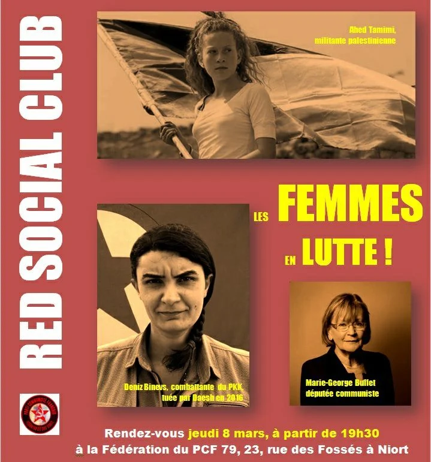

Publication d’archives
Prochain Red Social Club jeudi 08 mars à partir de 19H30: les femmes en lutte! Venez nombreux-ses!
Date indiquée par Facebook · 6 mars 2018
Texte conservé avec la publication
Contexte du dossier
En mars 2018, le Red Social Club annonce une soirée « les femmes en lutte » pour le 8 mars à la fédération. Le 6 mars 2021, la page rappelle que l’égalité de traitement entre femmes et hommes est un droit et appelle à lutter ensemble pour la journée internationale. Le texte disponible ne détaille pas les modalités niortaises portées par l’image jointe. Ces deux invitations donnent néanmoins au 8 mars son sens politique : faire entendre des revendications, ouvrir le débat et organiser la solidarité. L’égalité n’est ni une célébration annuelle ni une faveur accordée.

Sources
Archive rouge · export Facebook · AR-0002-FB-02117
À lire aussi · Contre les violences sexistes et sexuelles, le PCF se joint à l'appel à manifester du collectif #NousToutes le…